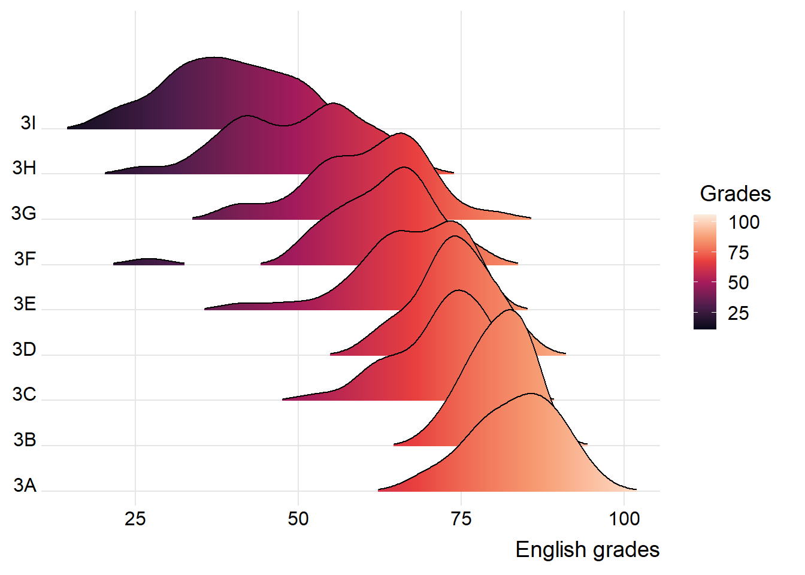
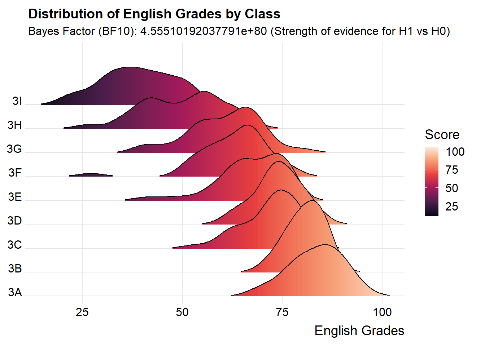
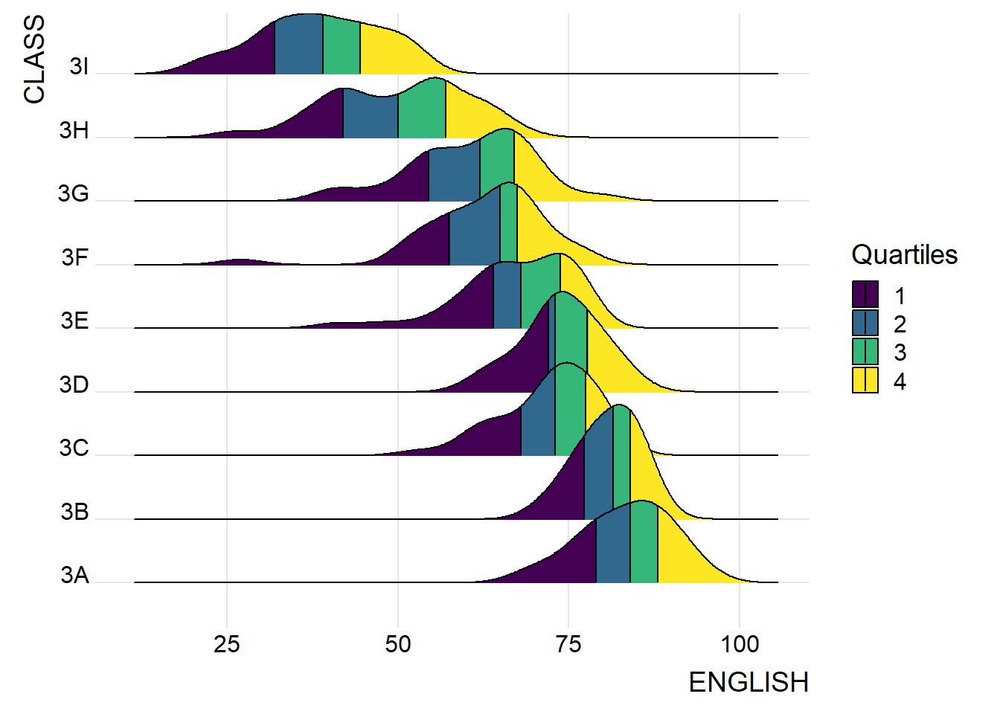
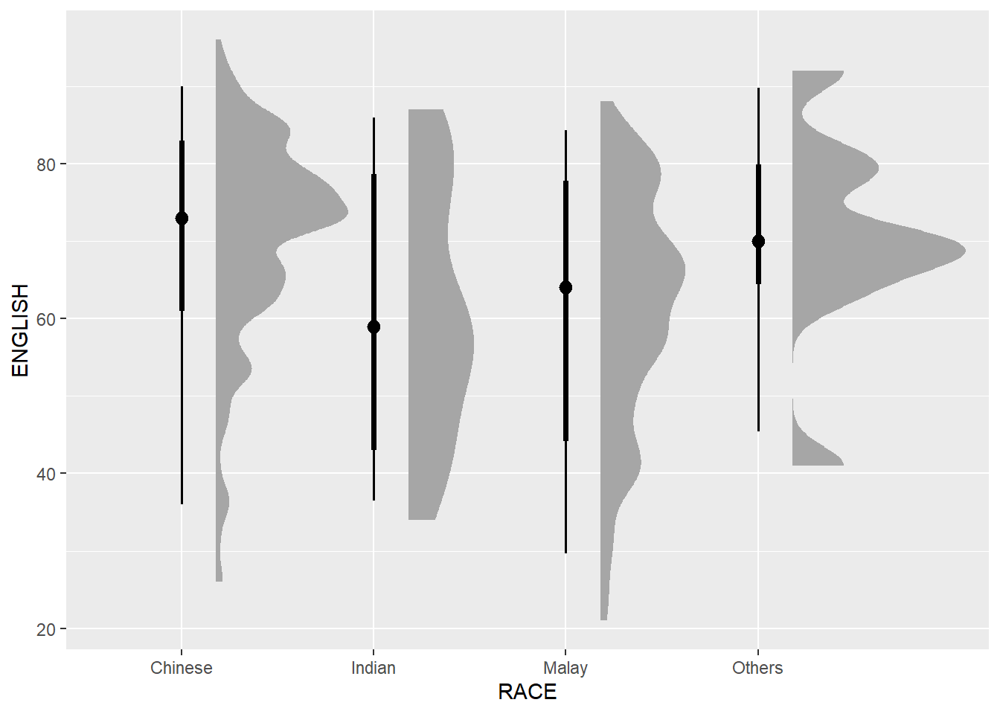
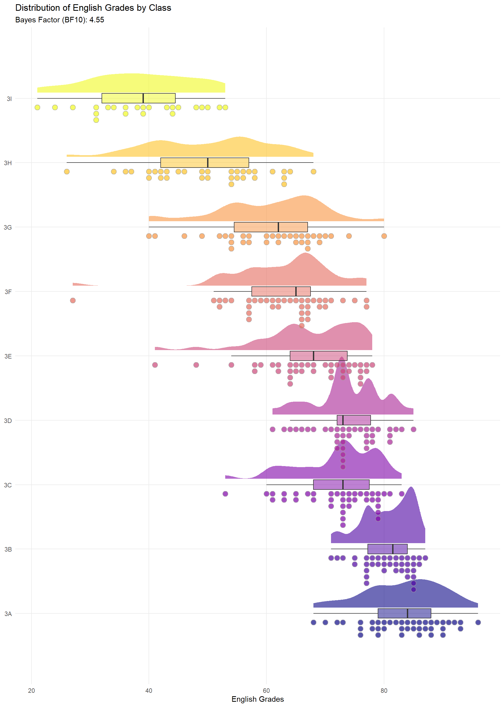

pacman::p_load(ggdist, ggridges, ggthemes,
colorspace, tidyverse,BayesFactor)Hands-on_Ex04A
Visualising Distribution
For the purpose of this exercise we will use:
ggridges, a ggplot2 extension specially designed for plotting ridgeline plots,
ggdist, a ggplot2 extension spacially desgin for visualising distribution and uncertainty,
tidyverse, a family of R packages to meet the modern data science and visual communication needs,
ggthemes, a ggplot extension that provides the user additional themes, scales, and geoms for the - ggplots package, and
colorspace, an R package provides a broad toolbox for selecting individual colors or color palettes, manipulating these colors, and employing them in various kinds of visualisations.
BayesFactor, A suite of functions for computing various Bayes factors for simple designs, including contingency tables, one- and two-sample designs, one-way designs, general ANOVA designs, and linear regressio
exam <- read_csv("data/Exam_data.csv")
head(exam)# A tibble: 6 × 7
ID CLASS GENDER RACE ENGLISH MATHS SCIENCE
<chr> <chr> <chr> <chr> <dbl> <dbl> <dbl>
1 Student321 3I Male Malay 21 9 15
2 Student305 3I Female Malay 24 22 16
3 Student289 3H Male Chinese 26 16 16
4 Student227 3F Male Chinese 27 77 31
5 Student318 3I Male Malay 27 11 25
6 Student306 3I Female Malay 31 16 16Visualising Distribution with Ridgeline Plot
Ridgeline plot (sometimes called Joyplot) is a data visualisation technique for revealing the distribution of a numeric value for several groups. Distribution can be represented using histograms or density plots, all aligned to the same horizontal scale and presented with a slight overlap.
ggridges package provides two main geom to plot gridgeline plots, they are: geom_ridgeline() and geom_density_ridges(). The former takes height values directly to draw the ridgelines, and the latter first estimates data densities and then draws those using ridgelines.
ggplot(exam,
aes(x = ENGLISH,
y = CLASS)) +
geom_density_ridges(
scale = 3,
rel_min_height = 0.01,
bandwidth = 3.4,
fill = lighten("#7097BB", .3),
color = "white"
) + scale_x_continuous(
name = "English grades",
expand = c(0, 0)
) +
scale_y_discrete(name = NULL, expand = expansion(add = c(0.2, 2.6))) +
theme_ridges()
ggplot(exam,
aes(x = ENGLISH,
y = CLASS,
fill = stat(x))) +
geom_density_ridges_gradient(
scale = 3,
rel_min_height = 0.01) +
scale_fill_viridis_c(name = " Grades",
option = "F") +
scale_x_continuous(
name = "English grades",
expand = c(0, 0)
) +
scale_y_discrete(name = NULL, expand = expansion(add = c(0.2, 2.6))) +
theme_ridges()
exam <- exam %>%
mutate(across(CLASS, as.factor))
# 2. Calculate the Bayes Factor
# This calculates the ratio of the likelihood of the data given the alternate
# hypothesis (H1) vs. the null hypothesis (H0).
bf_test <- anovaBF(ENGLISH ~ CLASS, data = exam)
# Extract the numeric value of BF10 to use in the plot
bf_val <- extractBF(bf_test)$bf[1]
# 3. Create the Ridgeline Plot with Gradient
ggplot(exam,
aes(x = ENGLISH,
y = CLASS,
fill = stat(x))) +
# Create the ridges with a height scale and minimum height threshold
geom_density_ridges_gradient(
scale = 3,
rel_min_height = 0.01) +
# Apply the Viridis color palette (Option C: Plasma)
scale_fill_viridis_c(
name = "Score",
option = "F") +
# Clean up the X-axis and remove padding
scale_x_continuous(
name = "English Grades",
expand = c(0, 0)) +
# Clean up Y-axis and add space at the top for labels
scale_y_discrete(
name = NULL,
expand = expansion(add = c(0.2, 2.6))) +
# Add the Bayes Factor (BF10) result to the subtitle
labs(
title = "Distribution of English Grades by Class",
subtitle = paste0("Bayes Factor (BF10): ", round(bf_val, 2),
" (Strength of evidence for H1 vs H0)")
) +
# Use the specialized ridges theme for a clean look
theme_ridges()
Mapping the probabilities directly onto color
ggplot(exam,
aes(x = ENGLISH,
y = CLASS,
fill = 0.5 - abs(0.5-stat(ecdf)))) +
stat_density_ridges(geom = "density_ridges_gradient",
calc_ecdf = TRUE) +
scale_fill_viridis_c(name = "Tail probability",
direction = -1) +
theme_ridges()
ImportantImportant
It is important include the argument calc_ecdf = TRUE in stat_density_ridges().
Ridgeline plots with quantile lines
By using geom_density_ridges_gradient(), we can colour the ridgeline plot by quantile, via the calculated stat(quantile) aesthetic as shown in the figure below.
ggplot(exam,
aes(x = ENGLISH,
y = CLASS,
fill = factor(stat(quantile))
)) +
stat_density_ridges(
geom = "density_ridges_gradient",
calc_ecdf = TRUE,
quantiles = 4,
quantile_lines = TRUE) +
scale_fill_viridis_d(name = "Quartiles") +
theme_ridges()
Instead of using number to define the quantiles, we can also specify quantiles by cut points such as 2.5% and 97.5% tails to colour the ridgeline plot as shown in the figure below.
ggplot(exam,
aes(x = ENGLISH,
y = CLASS,
fill = factor(stat(quantile))
)) +
stat_density_ridges(
geom = "density_ridges_gradient",
calc_ecdf = TRUE,
quantiles = c(0.025, 0.975)
) +
scale_fill_manual(
name = "Probability",
values = c("#FF0000A0", "#A0A0A0A0", "#0000FFA0"),
labels = c("(0, 0.025]", "(0.025, 0.975]", "(0.975, 1]")
) +
theme_ridges()
Visualising Distribution with Raincloud Plot
Raincloud Plot is a data visualisation techniques that produces a half-density to a distribution plot. It gets the name because the density plot is in the shape of a “raincloud”. The raincloud (half-density) plot enhances the traditional box-plot by highlighting multiple modalities (an indicator that groups may exist). The boxplot does not show where densities are clustered, but the raincloud plot does!
ggplot(exam,
aes(x = RACE,
y = ENGLISH)) +
stat_halfeye(adjust = 0.5,
justification = -0.2,
)
# We remove the slab interval by setting .width = 0 and point_colour = NA.
ggplot(exam,
aes(x = RACE,
y = ENGLISH)) +
stat_halfeye(adjust = 0.5,
justification = -0.2,
.width = 0,
point_colour = NA
)
Adding the boxplot with geom_boxplot()
Next, we will add the second geometry layer using geom_boxplot() of ggplot2. This produces a narrow boxplot. We reduce the width and adjust the opacity.
ggplot(exam,
aes(x = RACE,
y = ENGLISH)) +
stat_halfeye(adjust = 0.5,
justification = -0.2,
.width = 0,
point_colour = NA) +
geom_boxplot(width = .20,
outlier.shape = NA)
Next, we will add the third geometry layer using stat_dots() of ggdist package. This produces a half-dotplot, which is similar to a histogram that indicates the number of samples (number of dots) in each bin. We select side = “left” to indicate we want it on the left-hand side. Rainplot looks pretty good here too
ggplot(exam,
aes(x = RACE,
y = ENGLISH)) +
stat_halfeye(adjust = 0.5,
justification = -0.2,
.width = 0,
point_colour = NA) +
geom_boxplot(width = .20,
outlier.shape = NA) +
stat_dots(side = "left",
justification = 1.2,
binwidth = .5,
dotsize = 2)
Flipping it over
ggplot(exam,
aes(x = RACE,
y = ENGLISH)) +
stat_halfeye(adjust = 0.5,
justification = -0.2,
.width = 0,
point_colour = NA) +
geom_boxplot(width = .20,
outlier.shape = NA) +
stat_dots(side = "left",
justification = 1.2,
binwidth = .5,
dotsize = 1.5) +
coord_flip() +
theme_economist()
ggplot(exam, aes(x = ENGLISH, y = CLASS, fill = CLASS)) +
# 1. THE "CLOUD" (Half-density curve)
# justification = -0.2 pushes the density curve up slightly to make room for points
stat_halfeye(
adjust = 0.5,
justification = -0.1,
.width = 0,
point_colour = NA
) +
# 2. THE BOXPLOT (Quartiles and Median)
# width = 0.15 keeps it narrow so it doesn't overlap the cloud
geom_boxplot(
width = 0.15,
outlier.shape = NA, # Hide outliers here so they don't double-print with the dots
alpha = 0.5
) +
# 3. THE "RAIN" (Individual data points)
# side = "left" puts the dots below the density curve
# justification = 1.1 ensures the dots start just below the boxplot
stat_dots(
side = "left",
justification = 1.1,
binwidth = NA, # You may need to tweak this value depending on point clustering
alpha = 0.7
) +
# 4. TITLES AND THEME
labs(
title = "Distribution of English Grades by Class",
subtitle = "Bayes Factor (BF10): 4.55",
x = "English Grades",
y = NULL
) +
# Clean, modern theme
theme_minimal() +
theme(
legend.position = "none", # Hide legend since Y-axis already labels the classes
panel.grid.minor = element_blank()
) +
scale_fill_viridis_d(option = "plasma", alpha = 0.6) 